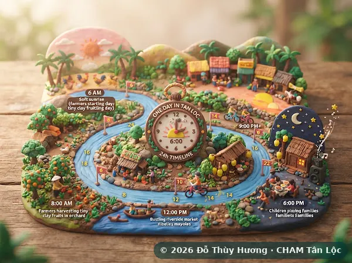
Một ngày ở Tân Lộc
Tình huống kể qua 24 giờ trên cù lao, với thanh thời gian, thẻ dữ kiện và âm thanh nền.
Mọi sản phẩm dùng được bằng tiếng Việt và tiếng Anh: đổi bằng nút VI/EN trên menu. Quét mã QR để mở trên điện thoại.
Tác giả: Đỗ Thùy Hương
CHAM là dự án đang ở giai đoạn kế hoạch, chưa hoạt động. Số liệu lấy từ kế hoạch kinh doanh gốc 2017 và là giả định; những chỗ vênh giữa các con số là điểm dạy học có chủ ý.
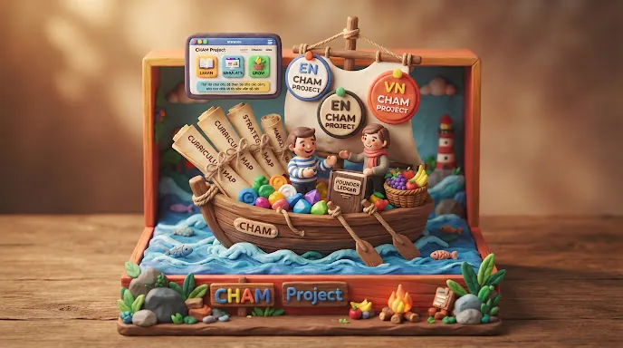

Tình huống kể qua 24 giờ trên cù lao, với thanh thời gian, thẻ dữ kiện và âm thanh nền.
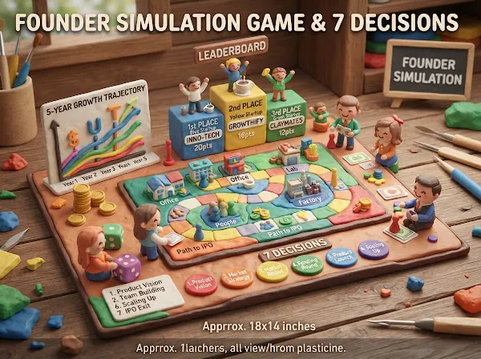
Bảy quyết định, kết quả năm năm và bảng xếp hạng lớp.
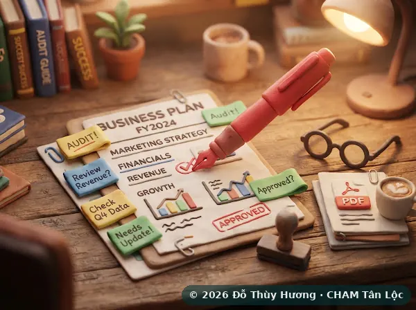
Kế hoạch kinh doanh dưới bút đỏ. Sinh viên thêm ghi chú riêng; có sẵn bản in / PDF.
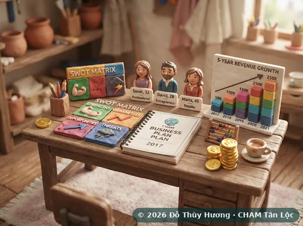
Thông tin chính, khoảng trống thị trường, SWOT, nhóm khách mục tiêu và kế hoạch tài chính 5 năm.
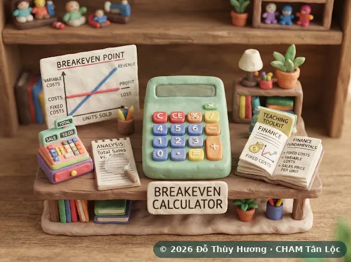
Máy tính doanh thu và hòa vốn, soát lỗi kế hoạch, tin đăng mẫu và ghi chú giảng dạy.
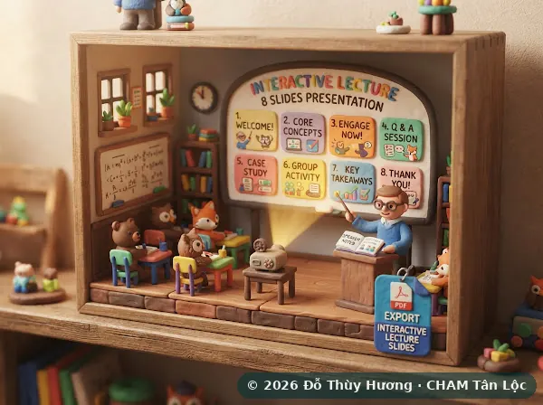
8 slide cho lớp học, có ghi chú người trình bày. Trình chiếu toàn màn hình hoặc in ra PDF.
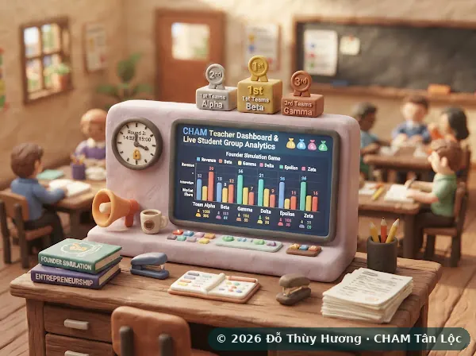
So sánh kết quả và quyết định của các nhóm trong Trò chơi nhà sáng lập.
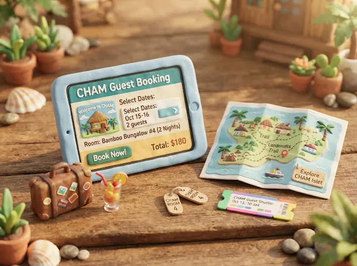
Website của CHAM: phòng, vé trong ngày, ẩm thực, buổi tối, đặc sản, đặt phòng, bản đồ, an toàn mùa nước và lịch trình 2 ngày.
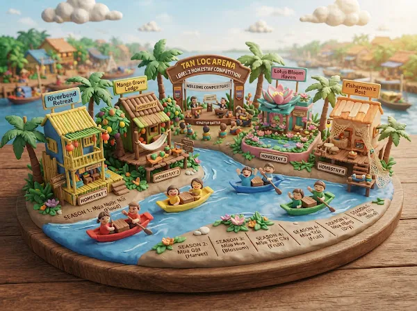
Kịch bản Bậc 2: bốn homestay, sáu mùa, có đối thủ thật Cẩm Lụa.
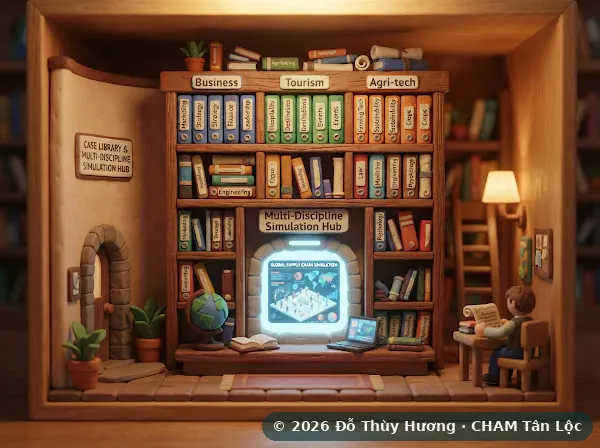
Lọc case theo ngành học và vùng; mỗi case gắn với một mô phỏng.
CHAM™ và nội dung tình huống © 2017–2026 Đỗ Thùy Hương, dùng trên BizOn theo giấy phép không độc quyền. Dự án đang ở giai đoạn kế hoạch; số liệu là giả định, không phải kết quả hoạt động.